library(readxl)
library(tidyverse)
library(DT)
df <- read_xlsx(here::here("files/Happy-Planet-Index-2006-2025-public-data-set.xlsx"),
sheet = 2, skip = 8)
# Keep only ranked countries (rows with an HPI score) and label the continent codes
hpi <- df[!is.na(df$HPI), ]
regions <- c("Latin America", "N. America & Oceania", "Western Europe",
"Middle East & N. Africa", "Africa", "South Asia",
"E. Europe & Central Asia", "East Asia")
hpi$region <- factor(regions[hpi$Continent], levels = regions)
# HPI performance bands (used by the pie chart and the scatterplot)
hpi$band <- cut(hpi$HPI, breaks = c(-Inf, 40, 50, 60, Inf), right = FALSE,
labels = c("Below 40", "40 to 49.9", "50 to 59.9", "60 or more"))
datatable(head(hpi, 10))Assignment 5 - EPPS 6355 - Data Visualization
Setup, data import and display
Part 1. Base Graphics
Theme
# Project colours (same as R/tema.R and custom.scss)
pal <- c(green = "#154734", orange = "#E87500", blue = "#3F6DD0",
ink = "#171B18", grey = "#636B64", light_grey = "#D8DBD4")
seq_green <- c("#B5DEC4", "#6DBB8E", "#2E8B5E", "#154734") # light -> dark, for ordered bands
# Georgia on Windows needs to be registered once; elsewhere fall back to "serif"
if (.Platform$OS.type == "windows") windowsFonts(Georgia = windowsFont("Georgia"))
base_font <- if (.Platform$OS.type == "windows") "Georgia" else "serif"
# Applies the custom style and returns the previous state, so it can be restored:
# op <- theme_base(); ...plot...; par(op)
theme_base <- function(mar = c(5.5, 5, 4, 2), ...) {
par(family = base_font,
cex = 0.95, # base text size
cex.main = 1.25, font.main = 2, col.main = pal[["green"]],
cex.lab = 1.0, col.lab = pal[["ink"]],
cex.axis = 0.85, col.axis = pal[["grey"]],
fg = pal[["grey"]], # axis lines and ticks
las = 1, # horizontal axis labels
bty = "l", # L-shaped box
tcl = -0.25, # short ticks pointing out
mgp = c(3, 0.6, 0), # title, labels, line distances
mar = mar, # bottom, left, top, right (lines)
lwd = 1.2,
...)
}
# Light reference grid drawn behind the data
add_grid <- function(h = TRUE, v = FALSE) {
if (h) abline(h = axTicks(2), col = pal[["light_grey"]], lwd = 0.8, lty = "dotted")
if (v) abline(v = axTicks(1), col = pal[["light_grey"]], lwd = 0.8, lty = "dotted")
}
# Source note, bottom-left of the figure
source_note <- function(txt) {
mtext(txt, side = 1, line = par("mar")[1] - 1, adj = 0,
cex = 0.75, font = 3, col = pal[["grey"]])
}a) Histogram
plot_title <- "Distribution of Happy Planet Index scores, 2025" # PLACEHOLDER
x_label <- "HPI score (0-100 points)" # PLACEHOLDER
y_label <- "Number of countries" # PLACEHOLDER
source_text <- "Source: Happy Planet Index 2006-2025 public data set (happyplanetindex.org)." # PLACEHOLDER
op <- theme_base()
hist(hpi$HPI, breaks = seq(30, 70, by = 2.5),
col = pal[["green"]], border = "white", lwd = 2,
main = plot_title, xlab = x_label, ylab = y_label,
xlim = c(30, 70), axes = FALSE)
axis(1, at = seq(30, 70, 5))
axis(2)
median_hpi <- median(hpi$HPI)
abline(v = median_hpi, col = pal[["orange"]], lty = "dashed", lwd = 2.5) # annotation
text(median_hpi, par("usr")[4] * 0.95, paste("Median =", round(median_hpi, 1)),
pos = 2, col = pal[["ink"]], cex = 0.85) # annotation
legend("topright", legend = "Median score", col = pal[["orange"]],
lty = "dashed", lwd = 2.5, bty = "n", cex = 0.85)
source_note(source_text)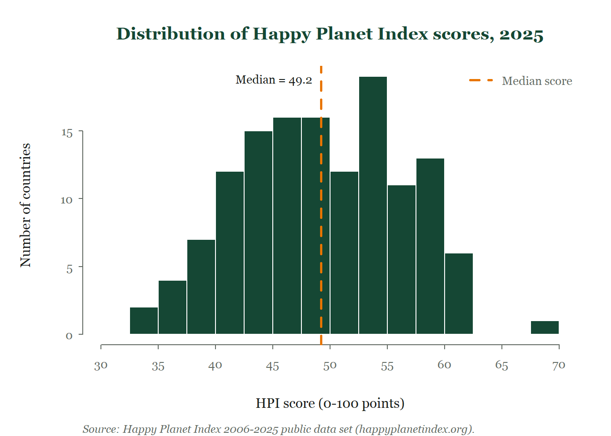
par(op)b) Bar Chart
Vertical
plot_title <- "Average HPI score by region, 2025" # PLACEHOLDER
x_label <- "Region" # PLACEHOLDER
y_label <- "Mean HPI score (points)" # PLACEHOLDER
source_text <- "Source: Happy Planet Index 2006-2025 public data set (happyplanetindex.org)." # PLACEHOLDER
mean_region <- sort(tapply(hpi$HPI, hpi$region, mean), decreasing = TRUE)
region_labels <- c("Latin\nAmerica", "N. America\n& Oceania", "Western\nEurope",
"Middle East\n& N. Africa", "Africa", "South\nAsia",
"E. Europe &\nCentral Asia", "East\nAsia")[match(names(mean_region), regions)] # wrapped names
op <- theme_base(mar = c(7.5, 5, 4, 2))
pos <- barplot(mean_region, names.arg = rep("", length(mean_region)),
col = pal[["green"]], border = NA, space = 0.35,
ylim = c(0, 70), main = plot_title, ylab = y_label, axes = FALSE)
add_grid()
barplot(mean_region, names.arg = rep("", length(mean_region)), col = pal[["green"]],
border = NA, space = 0.35, axes = FALSE, add = TRUE) # bars over grid
axis(2, at = seq(0, 70, 10))
text(pos, -2, region_labels, xpd = TRUE, adj = c(0.5, 1), cex = 0.72, col = pal[["grey"]])
mtext(x_label, side = 1, line = 5, col = pal[["ink"]])
overall_mean <- mean(hpi$HPI)
abline(h = overall_mean, col = pal[["orange"]], lty = "longdash", lwd = 2) # annotation
text(pos, 3, sprintf("%.1f", mean_region), cex = 0.75, col = "white") # values at the bar base
legend("topright", legend = paste0("Average of all countries (", round(overall_mean, 1), ")"),
col = pal[["orange"]], lty = "longdash", lwd = 2, bty = "n", cex = 0.8)
source_note(source_text)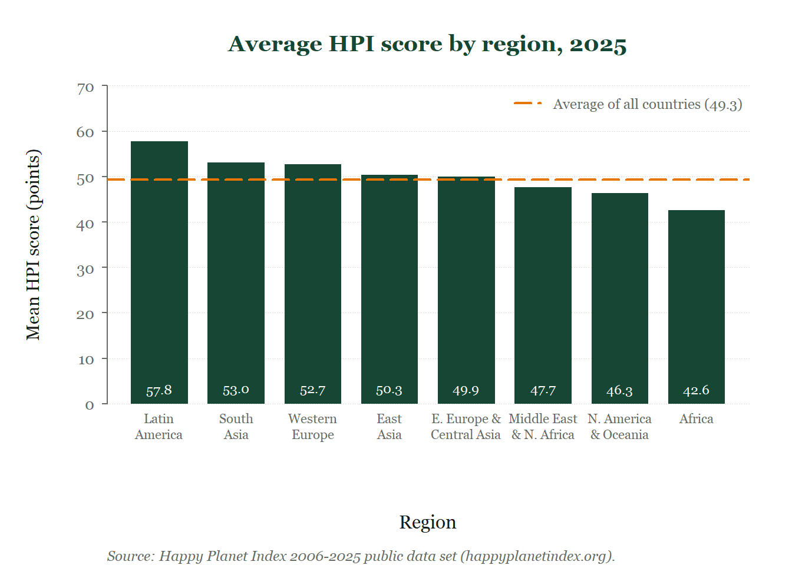
par(op)plot_title <- "Top 10 countries on the Happy Planet Index, 2025" # PLACEHOLDER
x_label <- "HPI score (points)" # PLACEHOLDER
source_text <- "Source: Happy Planet Index 2006-2025 public data set (happyplanetindex.org)." # PLACEHOLDER
top10 <- head(hpi[order(-hpi$HPI), c("Country", "HPI")], 10)
top10 <- top10[nrow(top10):1, ] # highest at the top
bar_colors <- ifelse(top10$Country == "Costa Rica", pal[["orange"]], pal[["green"]])
op <- theme_base(mar = c(5.5, 8.5, 4, 3))
pos <- barplot(top10$HPI, names.arg = top10$Country, horiz = TRUE,
col = bar_colors, border = NA, space = 0.4,
xlim = c(0, 100), main = plot_title, xlab = x_label,
axes = FALSE, cex.names = 0.85)
axis(1, at = seq(0, 75, 15))
text(top10$HPI, pos, sprintf("%.1f", top10$HPI), pos = 4, cex = 0.75, col = pal[["ink"]])
legend("bottomright", legend = c("Ranked 1st", "Other top-10 countries"),
fill = c(pal[["orange"]], pal[["green"]]), border = NA, bty = "n", cex = 0.8)
source_note(source_text)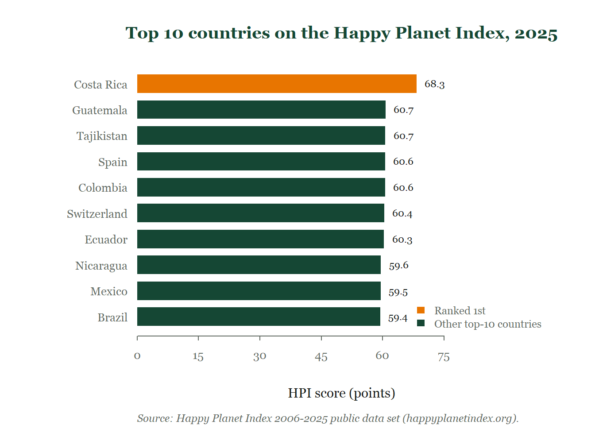
par(op)c) Pie Chart
plot_title <- "Countries by HPI score band, 2025" # PLACEHOLDER
source_text <- "Source: Happy Planet Index 2006-2025 public data set (happyplanetindex.org)." # PLACEHOLDER
n_band <- table(hpi$band)
pct <- round(100 * n_band / sum(n_band))
op <- theme_base(mar = c(3, 1, 4, 1))
pie(n_band, labels = paste0(pct, "%\n(", n_band, ")"), col = seq_green,
border = "white", lwd = 2, clockwise = TRUE, init.angle = 90,
radius = 0.85, cex = 0.85, main = plot_title)
legend("topleft", title = "HPI score", legend = names(n_band),
fill = seq_green, border = NA, bty = "n", cex = 0.8)
mtext(paste("Total:", sum(n_band), "ranked countries"), side = 3, line = 0.2,
cex = 0.85, col = pal[["grey"]]) # annotation
source_note(source_text)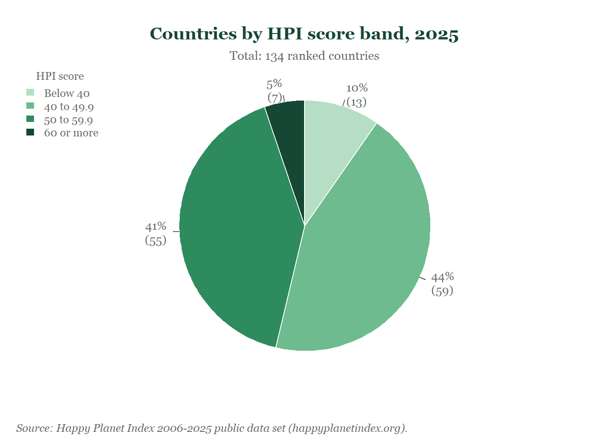
par(op)d) Boxplot
plot_title <- "HPI scores by region, 2025" # PLACEHOLDER
x_label <- "HPI score (points)" # PLACEHOLDER
source_text <- "Source: Happy Planet Index 2006-2025 public data set (happyplanetindex.org)." # PLACEHOLDER
region_order <- names(sort(tapply(hpi$HPI, hpi$region, median))) # lowest median at the bottom
hpi$region_ord <- factor(hpi$region, levels = region_order)
op <- theme_base(mar = c(5.5, 11, 4, 2))
boxplot(HPI ~ region_ord, data = hpi, horizontal = TRUE,
col = "#B5DEC4", border = pal[["green"]], lwd = 1.3,
boxwex = 0.6, staplewex = 0.4, outline = FALSE,
main = plot_title, xlab = x_label, ylab = "", ylim = c(30, 70),
axes = FALSE, frame.plot = FALSE)
axis(1, at = seq(30, 70, 10))
axis(2, at = seq_along(region_order), labels = region_order, cex.axis = 0.8, lwd = 0)
stripchart(HPI ~ region_ord, data = hpi, method = "jitter", jitter = 0.15,
pch = 21, bg = adjustcolor(pal[["green"]], 0.6), col = "white",
cex = 0.9, add = TRUE)
abline(v = median(hpi$HPI), col = pal[["orange"]], lty = "dotdash", lwd = 2) # annotation
legend("bottomright", legend = c("Country", "Median of all countries"),
pch = c(21, NA), pt.bg = c(pal[["green"]], NA), col = c("white", pal[["orange"]]),
lty = c(NA, "dotdash"), lwd = c(NA, 2), bty = "n", cex = 0.8)
source_note(source_text)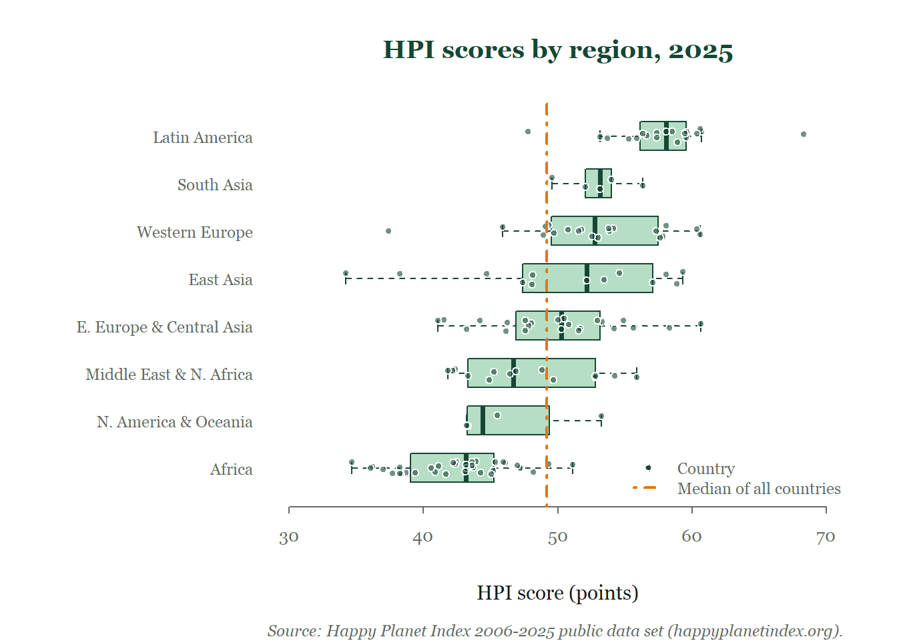
par(op)e) Scatterplot
plot_title <- "Life satisfaction vs. ecological footprint, 2025" # PLACEHOLDER
x_label <- "Ecological footprint (global hectares per person)" # PLACEHOLDER
y_label <- "Life satisfaction (0-10 scale)" # PLACEHOLDER
source_text <- "Source: Happy Planet Index 2006-2025 public data set (happyplanetindex.org)." # PLACEHOLDER
band_pch <- c(25, 22, 21, 24) # one pch per band (shape + colour)
band_idx <- as.integer(hpi$band)
ef_limit <- 1.48 # sustainable footprint for 2025 (gha)
op <- theme_base()
plot(hpi$`Ecological Footprint`, hpi$`Life satisfaction`, type = "n",
main = plot_title, xlab = x_label, ylab = y_label,
xlim = c(0, 12), ylim = c(3, 8.3), axes = FALSE)
axis(1, at = seq(0, 12, 2)); axis(2, at = 3:8)
add_grid(h = TRUE, v = TRUE)
abline(v = ef_limit, col = pal[["orange"]], lty = "dashed", lwd = 2) # annotation
text(ef_limit, 3.15, paste("Sustainable limit:", ef_limit, "gha"), pos = 4,
cex = 0.75, col = pal[["ink"]])
points(hpi$`Ecological Footprint`, hpi$`Life satisfaction`,
pch = band_pch[band_idx], bg = seq_green[band_idx], col = pal[["green"]], cex = 1.2, lwd = 0.8)
cr <- hpi[hpi$Country == "Costa Rica", ]
arrows(4.2, 8.15, cr$`Ecological Footprint` + 0.15, cr$`Life satisfaction` + 0.05,
length = 0.08, col = pal[["ink"]], lwd = 1.2) # annotation
text(4.2, 8.15, "Costa Rica: highest HPI", pos = 4, cex = 0.8, col = pal[["ink"]])
legend("bottomright", title = "HPI score", legend = levels(hpi$band),
pch = band_pch, pt.bg = seq_green, col = pal[["green"]],
pt.cex = 1.2, bty = "n", cex = 0.8)
source_note(source_text)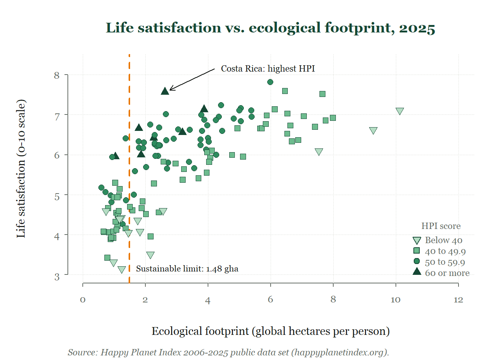
par(op)Part 2. ggplot2
Theme
pal <- c(green = "#154734", orange = "#E87500", blue = "#3F6DD0",
ink = "#171B18", grey = "#636B64", light_grey = "#D8DBD4")
seq_green <- c("#B5DEC4", "#6DBB8E", "#2E8B5E", "#154734") # light -> dark, for ordered bands
# Georgia on Windows needs to be registered once; elsewhere fall back to "serif"
if (.Platform$OS.type == "windows") windowsFonts(Georgia = windowsFont("Georgia"))
base_font <- if (.Platform$OS.type == "windows") "Georgia" else "serif"
# Custom theme built on a complete theme (theme_classic); applied to every chart below.
# Same font, colours, L-shaped axes, short ticks and dotted grid as theme_base() in Part 1.
theme_mine <- function(base_size = 11) {
theme_classic(base_size = base_size, base_family = base_font) +
theme(
plot.title = element_text(face = "bold", colour = pal[["green"]],
size = rel(1.3), hjust = 0.5,
margin = margin(b = 8)),
plot.subtitle = element_text(colour = pal[["grey"]], hjust = 0.5),
plot.caption = element_text(face = "italic", colour = pal[["grey"]],
size = rel(0.75), hjust = 0,
margin = margin(t = 12)),
plot.caption.position = "plot",
axis.title = element_text(colour = pal[["ink"]]),
axis.title.x = element_text(margin = margin(t = 10)),
axis.title.y = element_text(margin = margin(r = 10)),
axis.text = element_text(colour = pal[["grey"]], size = rel(0.85)),
axis.line = element_line(colour = pal[["grey"]], linewidth = 0.5), # L-shaped box
axis.ticks = element_line(colour = pal[["grey"]], linewidth = 0.5),
axis.ticks.length = unit(3, "pt"), # short ticks
panel.grid.major.y = element_line(colour = pal[["light_grey"]],
linewidth = 0.4, linetype = "dotted"),
legend.background = element_blank(),
legend.key = element_blank(),
legend.text = element_text(colour = pal[["grey"]], size = rel(0.8)),
legend.title = element_text(colour = pal[["grey"]], size = rel(0.8)),
plot.margin = margin(12, 16, 10, 12)
)
}
# Places the legend inside the panel (x, y from 0 to 1); works in ggplot2 < 3.5 and >= 3.5
legend_inside <- function(x, y) {
if (packageVersion("ggplot2") >= "3.5.0") {
theme(legend.position = "inside", legend.position.inside = c(x, y),
legend.justification = c(x, y))
} else {
theme(legend.position = c(x, y), legend.justification = c(x, y))
}
}a) Histogram
plot_title <- "Distribution of Happy Planet Index scores, 2025" # PLACEHOLDER
x_label <- "HPI score (0-100 points)" # PLACEHOLDER
y_label <- "Number of countries" # PLACEHOLDER
source_text <- "Source: Happy Planet Index 2006-2025 public data set (happyplanetindex.org)." # PLACEHOLDER
median_hpi <- median(hpi$HPI)
ggplot(hpi, aes(x = HPI)) +
geom_histogram(breaks = seq(30, 70, by = 2.5), fill = pal[["green"]],
colour = "white", linewidth = 0.8) +
geom_vline(aes(xintercept = median_hpi, linetype = "Median score"),
colour = pal[["orange"]], linewidth = 1, key_glyph = "path") + # annotation
annotate("text", x = median_hpi, y = 18.5, label = paste("Median =", round(median_hpi, 1)),
hjust = 1.08, size = 3.2, family = base_font, colour = pal[["ink"]]) + # annotation
scale_linetype_manual(values = "dashed", name = NULL) +
scale_x_continuous(limits = c(30, 70), breaks = seq(30, 70, 5)) +
scale_y_continuous(expand = expansion(mult = c(0, 0.05))) +
labs(title = plot_title, x = x_label, y = y_label, caption = source_text) +
theme_mine() +
theme(panel.grid.major.y = element_blank()) +
legend_inside(1, 1)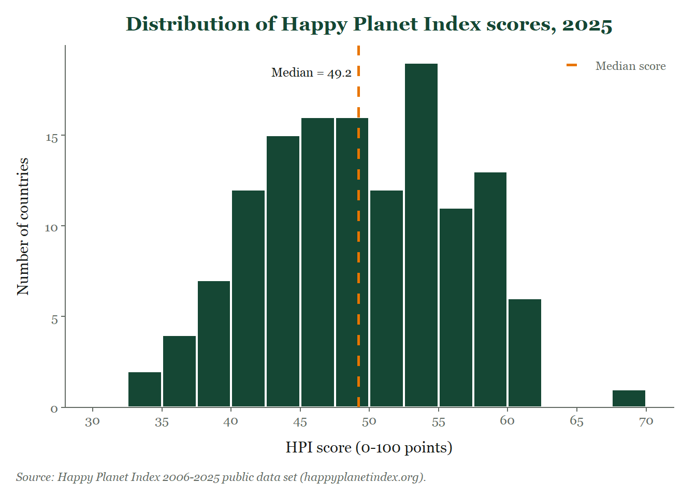
b) Bar Chart
Vertical
plot_title <- "Average HPI score by region, 2025" # PLACEHOLDER
x_label <- "Region" # PLACEHOLDER
y_label <- "Mean HPI score (points)" # PLACEHOLDER
source_text <- "Source: Happy Planet Index 2006-2025 public data set (happyplanetindex.org)." # PLACEHOLDER
mean_region <- aggregate(HPI ~ region, data = hpi, FUN = mean)
mean_region$region <- reorder(mean_region$region, -mean_region$HPI) # highest first
overall_mean <- mean(hpi$HPI)
region_labels <- setNames(
c("Latin\nAmerica", "N. America\n& Oceania", "Western\nEurope",
"Middle East\n& N. Africa", "Africa", "South\nAsia",
"E. Europe &\nCentral Asia", "East\nAsia"), regions) # wrapped names
ggplot(mean_region, aes(x = region, y = HPI)) +
geom_col(fill = pal[["green"]], width = 0.74) +
geom_text(aes(y = 3, label = sprintf("%.1f", HPI)), colour = "white",
size = 3, family = base_font) + # values at the bar base
geom_hline(aes(yintercept = overall_mean,
linetype = paste0("Average of all countries (", round(overall_mean, 1), ")")),
colour = pal[["orange"]], linewidth = 0.9) + # annotation
scale_linetype_manual(values = "longdash", name = NULL) +
scale_x_discrete(labels = region_labels) +
scale_y_continuous(limits = c(0, 70), breaks = seq(0, 70, 10),
expand = expansion(mult = c(0, 0))) +
labs(title = plot_title, x = x_label, y = y_label, caption = source_text) +
theme_mine() +
theme(axis.text.x = element_text(size = rel(0.75), lineheight = 0.9),
axis.ticks.x = element_blank()) +
legend_inside(1, 1)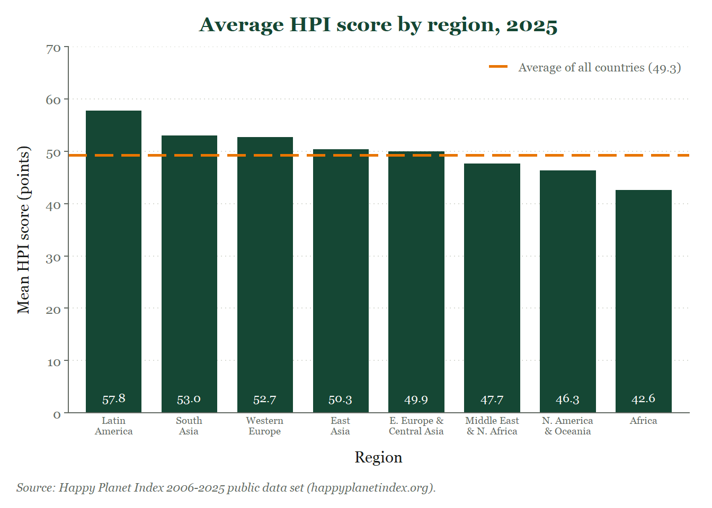
plot_title <- "Top 10 countries on the Happy Planet Index, 2025" # PLACEHOLDER
x_label <- "HPI score (points)" # PLACEHOLDER
source_text <- "Source: Happy Planet Index 2006-2025 public data set (happyplanetindex.org)." # PLACEHOLDER
top10 <- head(hpi[order(-hpi$HPI), c("Country", "HPI")], 10)
top10$Country <- factor(top10$Country, levels = rev(top10$Country)) # highest at the top
top10$highlight <- ifelse(top10$Country == "Costa Rica", "Ranked 1st", "Other top-10 countries")
ggplot(top10, aes(x = HPI, y = Country, fill = highlight)) +
geom_col(width = 0.7) +
geom_text(aes(label = sprintf("%.1f", HPI)), hjust = -0.25, size = 2.9,
family = base_font, colour = pal[["ink"]]) +
scale_fill_manual(values = c("Ranked 1st" = pal[["orange"]],
"Other top-10 countries" = pal[["green"]]),
breaks = c("Ranked 1st", "Other top-10 countries"), name = NULL) +
scale_x_continuous(limits = c(0, 100), breaks = seq(0, 75, 15),
expand = expansion(mult = c(0, 0))) +
labs(title = plot_title, x = x_label, y = NULL, caption = source_text) +
annotate("segment", x = 0, xend = 75, y = -Inf, yend = -Inf,
colour = pal[["grey"]], linewidth = 0.5) + # axis line 0-75
theme_mine() +
theme(panel.grid.major.y = element_blank(), axis.line = element_blank(),
axis.ticks.y = element_blank(),
axis.text.y = element_text(size = rel(0.9))) +
legend_inside(1, 0)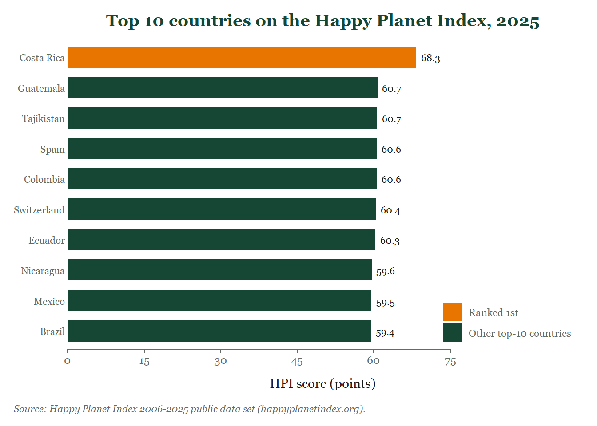
c) Pie Chart
plot_title <- "Countries by HPI score band, 2025" # PLACEHOLDER
source_text <- "Source: Happy Planet Index 2006-2025 public data set (happyplanetindex.org)." # PLACEHOLDER
slices <- as.data.frame(table(band = hpi$band))
slices$pct <- round(100 * slices$Freq / sum(slices$Freq))
# Position of each label: middle of its slice, counted clockwise from 12 o'clock
slices$mid <- cumsum(slices$Freq) - slices$Freq / 2
ggplot(slices, aes(x = 1, y = Freq, fill = band)) +
geom_col(width = 1, colour = "white", linewidth = 1,
position = position_stack(reverse = TRUE)) +
geom_text(aes(x = 1.68, y = mid, label = paste0(pct, "%\n(", Freq, ")")),
size = 3, lineheight = 0.9, family = base_font, colour = pal[["grey"]]) +
coord_polar(theta = "y", start = 0, direction = 1, clip = "off") + # clockwise from the top
scale_fill_manual(values = seq_green, name = "HPI score") +
scale_x_continuous(limits = c(0.5, 1.75)) +
labs(title = plot_title,
subtitle = paste("Total:", sum(slices$Freq), "ranked countries"), # annotation
caption = source_text) +
theme_mine() +
theme(axis.line = element_blank(), axis.text = element_blank(),
axis.ticks = element_blank(),
axis.title.x = element_blank(), axis.title.y = element_blank(),
panel.grid.major.y = element_blank(), # a pie needs no axes or grid
plot.subtitle = element_text(margin = margin(t = 4, b = 4)),
legend.position = "right")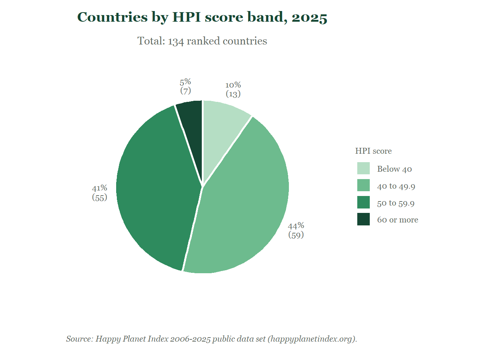
d) Boxplot
plot_title <- "HPI scores by region, 2025" # PLACEHOLDER
x_label <- "HPI score (points)" # PLACEHOLDER
source_text <- "Source: Happy Planet Index 2006-2025 public data set (happyplanetindex.org)." # PLACEHOLDER
hpi$region_ord <- reorder(hpi$region, hpi$HPI, FUN = median) # lowest median at the bottom
overall_median <- median(hpi$HPI)
set.seed(2025) # reproducible jitter
# Whisker ends per region (same rule as base R boxplot: 1.5 x IQR)
whiskers <- do.call(rbind, lapply(split(hpi$HPI, hpi$region_ord), function(v) {
st <- boxplot.stats(v)$stats
data.frame(min = st[1], q1 = st[2], q3 = st[4], max = st[5])
}))
whiskers$region_ord <- factor(rownames(whiskers), levels = levels(hpi$region_ord))
whiskers$y <- as.integer(whiskers$region_ord)
ggplot(hpi, aes(x = HPI, y = region_ord)) +
geom_segment(data = whiskers, aes(x = min, xend = q1, y = region_ord, yend = region_ord),
inherit.aes = FALSE, colour = pal[["green"]], linetype = "dashed") + # whiskers
geom_segment(data = whiskers, aes(x = q3, xend = max, y = region_ord, yend = region_ord),
inherit.aes = FALSE, colour = pal[["green"]], linetype = "dashed") +
geom_segment(data = whiskers, aes(x = min, xend = min, y = y - 0.12, yend = y + 0.12),
inherit.aes = FALSE, colour = pal[["green"]]) + # staples
geom_segment(data = whiskers, aes(x = max, xend = max, y = y - 0.12, yend = y + 0.12),
inherit.aes = FALSE, colour = pal[["green"]]) +
geom_boxplot(fill = "#B5DEC4", colour = pal[["green"]], width = 0.6,
linewidth = 0.6, outlier.shape = NA, coef = 0) + # box only; whiskers drawn above
geom_jitter(aes(fill = "Country"), height = 0.15, width = 0, shape = 21,
colour = "white", size = 2, stroke = 0.4, alpha = 0.85) +
geom_vline(aes(xintercept = overall_median, linetype = "Median of all countries"),
colour = pal[["orange"]], linewidth = 0.9, key_glyph = "path") + # annotation
scale_fill_manual(values = c("Country" = pal[["green"]]), name = NULL) +
scale_linetype_manual(values = "dotdash", name = NULL) +
scale_x_continuous(limits = c(30, 70), breaks = seq(30, 70, 10)) +
labs(title = plot_title, x = x_label, y = NULL, caption = source_text) +
theme_mine() +
theme(panel.grid.major.y = element_blank(),
axis.line.y = element_blank(), axis.ticks.y = element_blank(),
legend.spacing.y = unit(0, "pt"), legend.margin = margin(0, 0, 0, 0)) +
legend_inside(1, 0)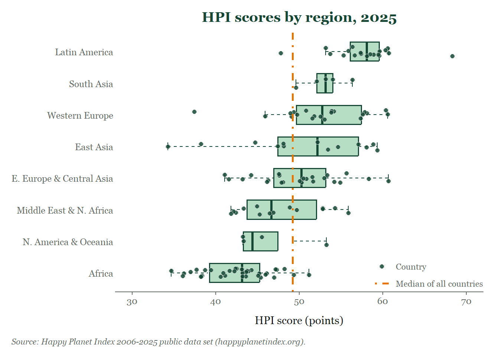
e) Scatterplot
plot_title <- "Life satisfaction vs. ecological footprint, 2025" # PLACEHOLDER
x_label <- "Ecological footprint (global hectares per person)" # PLACEHOLDER
y_label <- "Life satisfaction (0-10 scale)" # PLACEHOLDER
source_text <- "Source: Happy Planet Index 2006-2025 public data set (happyplanetindex.org)." # PLACEHOLDER
ef_limit <- 1.48 # sustainable footprint for 2025 (gha)
cr <- hpi[hpi$Country == "Costa Rica", ]
points_df <- hpi[!is.na(hpi$`Ecological Footprint`) & !is.na(hpi$`Life satisfaction`), ]
ggplot(points_df, aes(x = `Ecological Footprint`, y = `Life satisfaction`)) +
geom_vline(xintercept = ef_limit, colour = pal[["orange"]],
linetype = "dashed", linewidth = 0.9) + # annotation
annotate("text", x = ef_limit, y = 3.15, label = paste("Sustainable limit:", ef_limit, "gha"),
hjust = -0.05, size = 2.8, family = base_font, colour = pal[["ink"]]) +
geom_point(aes(shape = band, fill = band), colour = pal[["green"]],
size = 2.6, stroke = 0.5) +
annotate("segment", x = 4.2, y = 8.15,
xend = cr$`Ecological Footprint` + 0.15, yend = cr$`Life satisfaction` + 0.05,
arrow = arrow(length = unit(0.08, "inches")),
colour = pal[["ink"]], linewidth = 0.5) + # annotation
annotate("text", x = 4.2, y = 8.15, label = "Costa Rica: highest HPI", hjust = -0.05,
size = 3, family = base_font, colour = pal[["ink"]]) +
scale_shape_manual(values = c(25, 22, 21, 24), name = "HPI score") + # same pch as base R
scale_fill_manual(values = seq_green, name = "HPI score") +
scale_x_continuous(limits = c(0, 12), breaks = seq(0, 12, 2)) +
scale_y_continuous(limits = c(3, 8.3), breaks = 3:8) +
labs(title = plot_title, x = x_label, y = y_label, caption = source_text) +
theme_mine() +
theme(panel.grid.major.x = element_line(colour = pal[["light_grey"]],
linewidth = 0.4, linetype = "dotted")) +
legend_inside(1, 0)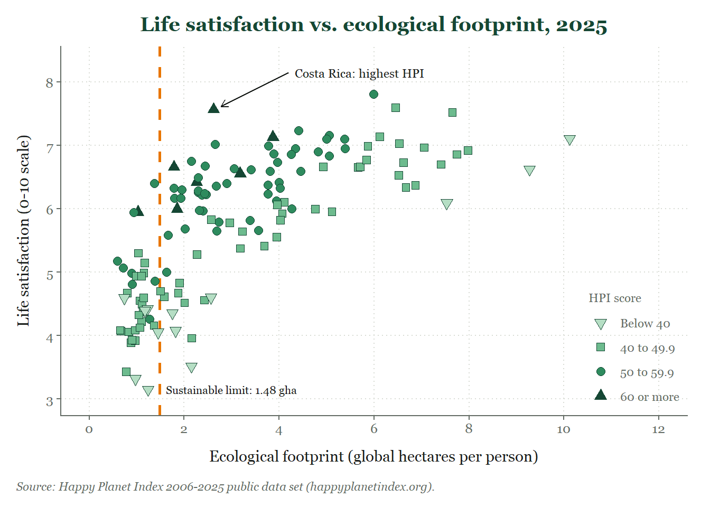
Part 3. Output Formats
## ---- export-setup ----------------------------------------------------------
# Run after the setup and theme chunks of Part 1 (theme_base) and Part 2 (theme_mine).
# Chosen chart: the scatterplot (e). It has text, thin lines, arrows and filled
# symbols, which makes the differences between formats easy to see when zooming.
fig_width <- 6.5 # inches
fig_height <- 4 # inches
dpi <- 300 # for the raster formats
export_dir <- here::here("export")
dir.create(export_dir, showWarnings = FALSE)
export_path <- function(name, ext) file.path(export_dir, paste0(name, ".", ext))
# pdf() only knows the PDF base fonts (Helvetica, Times, Courier), not Windows fonts.
# On Windows, map the family "Georgia" to the serif PDF font so pdf() does not fail.
# (cairo_pdf() would embed the real Georgia, if you prefer.)
if (.Platform$OS.type == "windows" && !"Georgia" %in% names(pdfFonts())) {
pdfFonts(Georgia = pdfFonts()$serif)
}
## ---- export-base -------------------------------------------------------------
# Part 1 scatterplot wrapped in a function, so it can be drawn on each device
draw_scatter <- function() {
plot_title <- "Life satisfaction vs. ecological footprint, 2025" # PLACEHOLDER
x_label <- "Ecological footprint (global hectares per person)" # PLACEHOLDER
y_label <- "Life satisfaction (0-10 scale)" # PLACEHOLDER
source_text <- "Source: Happy Planet Index 2006-2025 public data set (happyplanetindex.org)." # PLACEHOLDER
band_pch <- c(25, 22, 21, 24) # one pch per band (shape + colour)
band_idx <- as.integer(hpi$band)
ef_limit <- 1.48 # sustainable footprint for 2025 (gha)
op <- theme_base()
plot(hpi$`Ecological Footprint`, hpi$`Life satisfaction`, type = "n",
main = plot_title, xlab = x_label, ylab = y_label,
xlim = c(0, 12), ylim = c(3, 8.3), axes = FALSE)
axis(1, at = seq(0, 12, 2)); axis(2, at = 3:8)
add_grid(h = TRUE, v = TRUE)
abline(v = ef_limit, col = pal[["orange"]], lty = "dashed", lwd = 2) # annotation
text(ef_limit, 3.15, paste("Sustainable limit:", ef_limit, "gha"), pos = 4,
cex = 0.75, col = pal[["ink"]])
points(hpi$`Ecological Footprint`, hpi$`Life satisfaction`,
pch = band_pch[band_idx], bg = seq_green[band_idx], col = pal[["green"]], cex = 1.2, lwd = 0.8)
cr <- hpi[hpi$Country == "Costa Rica", ]
arrows(4.2, 8.15, cr$`Ecological Footprint` + 0.15, cr$`Life satisfaction` + 0.05,
length = 0.08, col = pal[["ink"]], lwd = 1.2) # annotation
text(4.2, 8.15, "Costa Rica: highest HPI", pos = 4, cex = 0.8, col = pal[["ink"]])
legend("bottomright", title = "HPI score", legend = levels(hpi$band),
pch = band_pch, pt.bg = seq_green, col = pal[["green"]],
pt.cex = 1.2, bty = "n", cex = 0.8)
source_note(source_text)
par(op)
}
pdf(export_path("scatter_base", "pdf"), width = fig_width, height = fig_height)
draw_scatter()
dev.off()png
2 svg(export_path("scatter_base", "svg"), width = fig_width, height = fig_height)
draw_scatter()
dev.off()png
2 png(export_path("scatter_base", "png"), width = fig_width, height = fig_height, units = "in", res = dpi)
draw_scatter()
dev.off()png
2 jpeg(export_path("scatter_base", "jpg"), width = fig_width, height = fig_height, units = "in", res = dpi,
quality = 90)
draw_scatter()
dev.off()png
2 tiff(export_path("scatter_base", "tiff"), width = fig_width, height = fig_height, units = "in", res = dpi,
compression = "lzw")
draw_scatter()
dev.off()png
2 bmp(export_path("scatter_base", "bmp"), width = fig_width, height = fig_height, units = "in", res = dpi)
draw_scatter()
dev.off()png
2 ## ---- export-ggplot -----------------------------------------------------------
# Part 2 scatterplot stored as an object (g_disp)
plot_title <- "Life satisfaction vs. ecological footprint, 2025" # PLACEHOLDER
x_label <- "Ecological footprint (global hectares per person)" # PLACEHOLDER
y_label <- "Life satisfaction (0-10 scale)" # PLACEHOLDER
source_text <- "Source: Happy Planet Index 2006-2025 public data set (happyplanetindex.org)." # PLACEHOLDER
ef_limit <- 1.48 # sustainable footprint for 2025 (gha)
cr <- hpi[hpi$Country == "Costa Rica", ]
points_df <- hpi[!is.na(hpi$`Ecological Footprint`) & !is.na(hpi$`Life satisfaction`), ]
g_disp <- ggplot(points_df, aes(x = `Ecological Footprint`, y = `Life satisfaction`)) +
geom_vline(xintercept = ef_limit, colour = pal[["orange"]],
linetype = "dashed", linewidth = 0.9) + # annotation
annotate("text", x = ef_limit, y = 3.15, label = paste("Sustainable limit:", ef_limit, "gha"),
hjust = -0.05, size = 2.8, family = base_font, colour = pal[["ink"]]) +
geom_point(aes(shape = band, fill = band), colour = pal[["green"]],
size = 2.6, stroke = 0.5) +
annotate("segment", x = 4.2, y = 8.15,
xend = cr$`Ecological Footprint` + 0.15, yend = cr$`Life satisfaction` + 0.05,
arrow = arrow(length = unit(0.08, "inches")),
colour = pal[["ink"]], linewidth = 0.5) + # annotation
annotate("text", x = 4.2, y = 8.15, label = "Costa Rica: highest HPI", hjust = -0.05,
size = 3, family = base_font, colour = pal[["ink"]]) +
scale_shape_manual(values = c(25, 22, 21, 24), name = "HPI score") + # same pch as base R
scale_fill_manual(values = seq_green, name = "HPI score") +
scale_x_continuous(limits = c(0, 12), breaks = seq(0, 12, 2)) +
scale_y_continuous(limits = c(3, 8.3), breaks = 3:8) +
labs(title = plot_title, x = x_label, y = y_label, caption = source_text) +
theme_mine() +
theme(panel.grid.major.x = element_line(colour = pal[["light_grey"]],
linewidth = 0.4, linetype = "dotted")) +
legend_inside(1, 0)
# ggsave() picks the device from the extension; .svg needs the svglite package
ggsave(export_path("scatter_ggplot", "pdf"), g_disp, width = fig_width, height = fig_height, units = "in")
ggsave(export_path("scatter_ggplot", "svg"), g_disp, width = fig_width, height = fig_height, units = "in")
ggsave(export_path("scatter_ggplot", "png"), g_disp, width = fig_width, height = fig_height, units = "in", dpi = dpi)
ggsave(export_path("scatter_ggplot", "jpg"), g_disp, width = fig_width, height = fig_height, units = "in", dpi = dpi,
quality = 90)
ggsave(export_path("scatter_ggplot", "tiff"), g_disp, width = fig_width, height = fig_height, units = "in", dpi = dpi,
compression = "lzw")
ggsave(export_path("scatter_ggplot", "bmp"), g_disp, width = fig_width, height = fig_height, units = "in", dpi = dpi)
## ---- export-table -------------------------------------------------------------
formats <- c("pdf", "svg", "png", "jpg", "tiff", "bmp")
format_table <- data.frame(
Format = toupper(formats),
Type = c("Vector", "Vector", "Raster", "Raster", "Raster", "Raster"),
`Base R (KB)` = round(file.size(export_path("scatter_base", formats)) / 1024, 1),
`ggplot2 (KB)` = round(file.size(export_path("scatter_ggplot", formats)) / 1024, 1),
Compression = c("Lossless", "Lossless", "Lossless", "Lossy", "Lossless (LZW)", "Lossless (uncompressed)"),
Transparency = c("Yes", "Yes", "Yes", "No", "Yes", "No (not in R's bmp())"),
check.names = FALSE
)
format_table Format Type Base R (KB) ggplot2 (KB) Compression
1 PDF Vector 9.3 9.5 Lossless
2 SVG Vector 313.1 25.0 Lossless
3 PNG Raster 91.5 216.3 Lossless
4 JPG Raster 251.6 657.0 Lossy
5 TIFF Raster 101.9 236.9 Lossless (LZW)
6 BMP Raster 6857.9 2288.6 Lossless (uncompressed)
Transparency
1 Yes
2 Yes
3 Yes
4 No
5 Yes
6 No (not in R's bmp())Report
Comparing export formats
I exported the scatterplot from Part 1 (base R) and its ggplot2 counterpart from Part 2 at the same physical size, 6.5 × 4 inches, using 300 dpi for the raster formats. I used the device functions (pdf(), svg(), png(), jpeg(), tiff(), bmp(), each closed with dev.off()) for the base R chart and ggsave() for the ggplot2 chart.
File characteristics
knitr::kable(format_table, align = "llrrll",
caption = "Export formats for the scatterplot (6.5 × 4 in, 300 dpi for raster formats)")| Format | Type | Base R (KB) | ggplot2 (KB) | Compression | Transparency |
|---|---|---|---|---|---|
| Vector | 9.3 | 9.5 | Lossless | Yes | |
| SVG | Vector | 313.1 | 25.0 | Lossless | Yes |
| PNG | Raster | 91.5 | 216.3 | Lossless | Yes |
| JPG | Raster | 251.6 | 657.0 | Lossy | No |
| TIFF | Raster | 101.9 | 236.9 | Lossless (LZW) | Yes |
| BMP | Raster | 6857.9 | 2288.6 | Lossless (uncompressed) | No (not in R’s bmp()) |
The two vector formats store drawing instructions instead of pixels, which is why the PDF files are the smallest. The SVG files show the biggest difference between the two systems. Base R’s svg() converts every letter into a drawn outline, while ggsave() writes through the svglite package and keeps the labels as real text. This makes the ggplot2 SVG about 13 times smaller and keeps its text searchable. BMP stores every pixel without compression, so it is about 75 times larger than the PNG of the same image. At quality 90, the JPG is not smaller than the PNG, because a chart has large flat areas of colour that lossless compression already handles well.
Zooming in to 400%
I opened each file and zoomed in to 400%.
| Format | Text at 400% | Lines at 400% |
|---|---|---|
| Perfectly sharp. The letters are redrawn from the vector instructions, so their curves stay smooth. | Smooth and crisp. The arrow, the dashed reference line and the symbol edges have clean edges. | |
| SVG | Perfectly sharp, same as the PDF. | Smooth and crisp, same as the PDF. |
| PNG | Slightly soft. The edges of the letters break into small square pixels. | The diagonal arrow and the symbol edges show visible “staircase” steps. |
| JPG | Soft and blocky, with faint grey speckles and halos around the letters (compression artifacts). | Staircase edges plus noise around the dark lines. Areas that should be pure white show slight specks. |
| TIFF | Identical to the PNG: soft, pixelated edges, no artifacts. | Identical to the PNG: staircase edges, no artifacts. |
| BMP | Identical to the PNG: soft, pixelated edges, no artifacts. | Identical to the PNG: staircase edges, no artifacts. |
The vector formats look the same at any zoom level because the viewer redraws them at the new size. The raster formats only enlarge the pixels that were saved at 300 dpi. PNG, TIFF and BMP look identical to each other because all three are lossless; only the JPG loses information.
Which format for each destination
| Destination | Format I would use | Why |
|---|---|---|
| Journal article | PDF (vector); TIFF at 300 to 600 dpi if the journal requires raster images | A vector PDF stays sharp at any column width and at any print resolution. R’s pdf() does not embed fonts, and most journals require embedded fonts, so I |
Reflections
Cleveland and McGill (1984) ranked the perceptual tasks a chart demands. Judging position along a common scale is the most accurate. Length comes next, while angle and area, the cues a pie chart relies on, rank lower. A pie therefore forces less precise judgements than a bar chart of the same numbers, which is why it is disapproved of; R’s own help page for pie() warns against it.
In my view, a pie chart is the right choice only when three conditions hold: the parts add up to a meaningful whole, there are very few slices, and the message is the part-to-whole relationship rather than exact comparison between slices. My chart of HPI score bands meets the first two conditions: four bands that together make up all 134 ranked countries. It conveys the gist well. Most countries score between 40 and 60, and only 5% reach 60 or more.
It fails the third condition. The two largest slices, 44% and 41%, are almost impossible to rank by angle alone, which is why I printed the percentages on the chart. Because the bands are ordered, a bar chart would show the same information more accurately.
AI prompts used
Claude Code - Opus 5.5 - 10/09/2026
Interaction 1
Using the df of the project, give me a suggestion, via base R, of the following graphs, respecting the criteria below: - Histogram
- Bar chart (i. Vertical ii. Horizontal) - Pie chart
- Boxplot
- ScatterplotCriteria:
- Do not use base R standard visuals. Use a different font family and size, colors, plotting symbols (pch), line types and widths, axis style, margins.
- Set the style with par() or, better, in a custom function, and let me restore the previous graphics state afterwards (op <- par(…) and par(op)).
- Give me placeholders in the scripts for a title, labelled axes with units, a legend wherever color or symbol carries meaning, and a data source note - Add at least one annotation with a low-level function (text(), abline(), arrows(), mtext() or legend()) to at least two of the charts.
Interaction 2
Please recreate the same charts in ggplot2 from the same data.
- Write one custom theme function (for example theme_mine()), built on a complete theme, and apply it to every chart.
- Match the colors and fonts you used in Part 1 so that the two sets are recognizably the same style.
- In two or three sentences per chart type, state which system made the chart easier to produce and why.